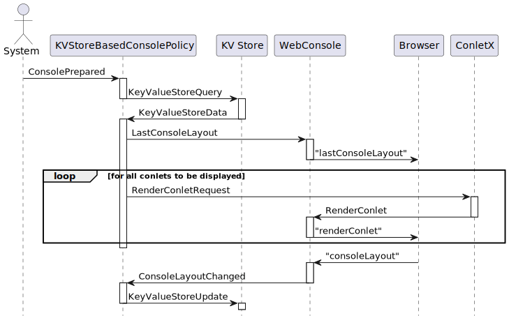

public class KVStoreBasedConsolePolicy extends org.jgrapes.core.Component
A component that restores the console layout using key/value events for persisting the data between sessions.

This component requires another component that handles the key/value
store events (KeyValueStoreUpdate, KeyValueStoreQuery)
used by this component for implementing persistence. When the web console
becomesready, this policy sends a query for the persisted data.
When the web console has been prepared, the policy sends the last layout as retrieved from persistent storage to the web console and then generates render events for all web console components contained in this layout.
Each time the layout is changed in the web console, the web console sends the new layout data and this component updates the persistent storage accordingly.
| Constructor and Description |
|---|
KVStoreBasedConsolePolicy()
Creates a new component with its channel set to
itself.
|
KVStoreBasedConsolePolicy(org.jgrapes.core.Channel componentChannel)
Creates a new component with its channel set to the given channel.
|
| Modifier and Type | Method and Description |
|---|---|
void |
onConsoleLayoutChanged(ConsoleLayoutChanged event,
ConsoleSession channel)
Handle changed layout.
|
void |
onConsolePrepared(ConsolePrepared event,
ConsoleSession channel)
Handle web console page loaded.
|
void |
onConsoleReady(ConsoleReady event,
ConsoleSession channel)
Intercept the
ConsoleReady event. |
void |
onKeyValueStoreData(org.jgrapes.util.events.KeyValueStoreData event,
ConsoleSession channel)
Handle returned data.
|
channel, component, defaultCriterion, isEligibleFor, setNameactiveEventPipeline, addHandler, attach, children, componentPath, componentVertex, detach, fire, initComponentsHandlers, iterator, name, newEventPipeline, newEventPipeline, newSyncEventPipeline, parent, registerAsGenerator, root, toString, unregisterAsGeneratorclone, equals, finalize, getClass, hashCode, notify, notifyAll, wait, wait, waitforEach, spliteratorpublic KVStoreBasedConsolePolicy()
Creates a new component with its channel set to itself.
public KVStoreBasedConsolePolicy(org.jgrapes.core.Channel componentChannel)
Creates a new component with its channel set to the given channel.
componentChannel - @Handler public void onConsoleReady(ConsoleReady event, ConsoleSession channel) throws InterruptedException
Intercept the ConsoleReady event. Request the
session data from the key/value store and resume.
event - channel - InterruptedException@Handler public void onKeyValueStoreData(org.jgrapes.util.events.KeyValueStoreData event, ConsoleSession channel) throws org.jdrupes.json.JsonDecodeException
Handle returned data.
event - the eventchannel - the channelorg.jdrupes.json.JsonDecodeException - the json decode exception@Handler public void onConsolePrepared(ConsolePrepared event, ConsoleSession channel)
Handle web console page loaded.
event - the eventchannel - the channel@Handler public void onConsoleLayoutChanged(ConsoleLayoutChanged event, ConsoleSession channel) throws IOException
Handle changed layout.
event - the eventchannel - the channelIOException - Signals that an I/O exception has occurred.